Mapping the contested boundaries of the neighborhood, and asking the people of Jackson Ward where they believe it really lies.
Jackson Ward is one of the most historic neighborhoods in the United States, a center of Black capitalism and the "Harlem of the South." Yet a basic question seems to produce different answers: where do its boundaries lie? The city's official administrative boundaries and the borders people have recognized throughout the neighborhood's history do not agree, in large part because construction of the interstate severed a portion of the community in the late 1950s.
That lack of agreement is not just academic. Shrinking, divided, and uncertain boundaries, shaped by historical complexities, systemic racism, and differing cultural values, have delayed decisions on improving and preserving the historic neighborhood. The 2024 team set out to capture how Jackson Ward is understood by the people who live in and move through it, and to compare that lived map against the city's official line.
From June 1 to June 28, 2024, IRB-approved researchers gathered responses from residents and people on the street throughout Jackson Ward. The survey instrument was built in Survey123, an ESRI product, and asked eight things of each participant: their residential status, membership in the community, years of residency, connection to the neighborhood on a scale of 1 to 5, the businesses and places they associate with it, their age range, their racial and ethnic background, and a participatory map.
That participatory map is the heart of the method. Each participant drew their own perceptual boundary of Jackson Ward directly on a digital map. The resulting polygons were then processed in ArcGIS Pro: split into overlapping pieces, joined back to the originals, and tallied with a "within" match to calculate, cell by cell, what percentage of respondents agreed that a given area belongs to Jackson Ward. The output is a heat map of agreement that can be filtered by any demographic group.
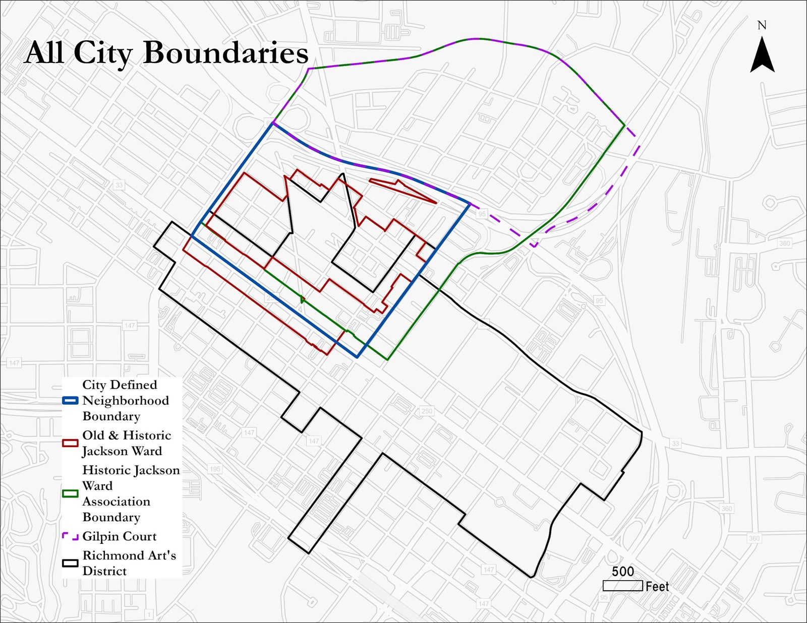
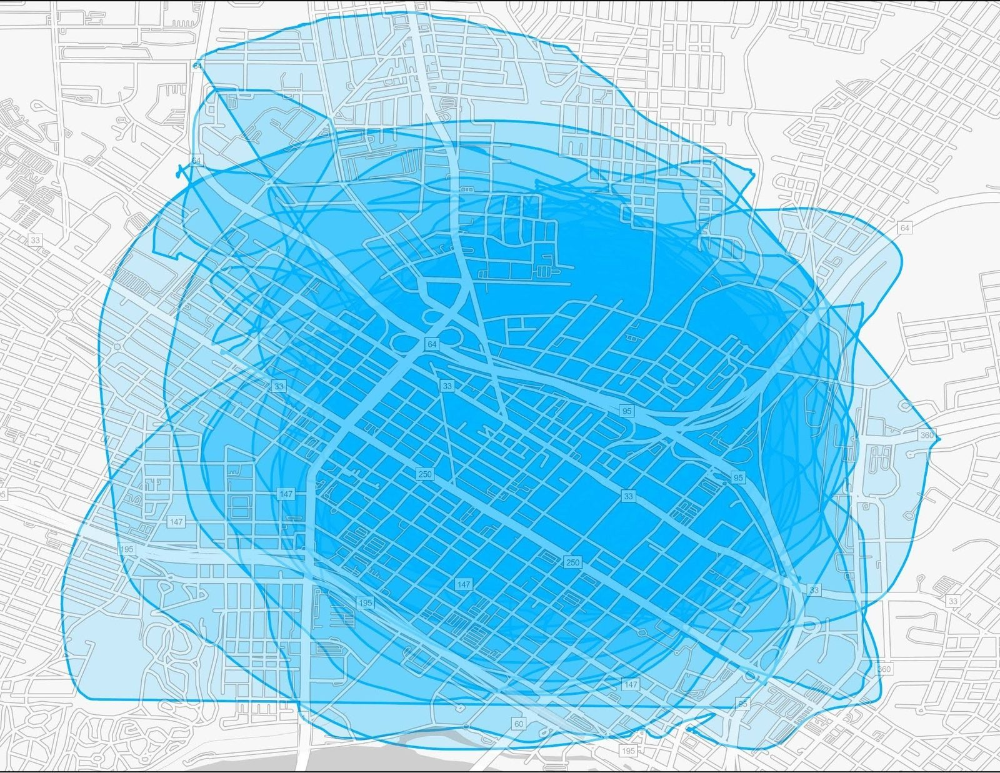
Across all 133 respondents, the neighborhood people described is consistently larger than its official administrative boundary. Between 60% and 80% believe Jackson Ward crosses over the interstate, and 60% to 80% feel it extends past 2nd Street. More than 60% agreed it includes key historical landmarks such as the St. Luke's Building, which sits north of the interstate, outside the city's current line.
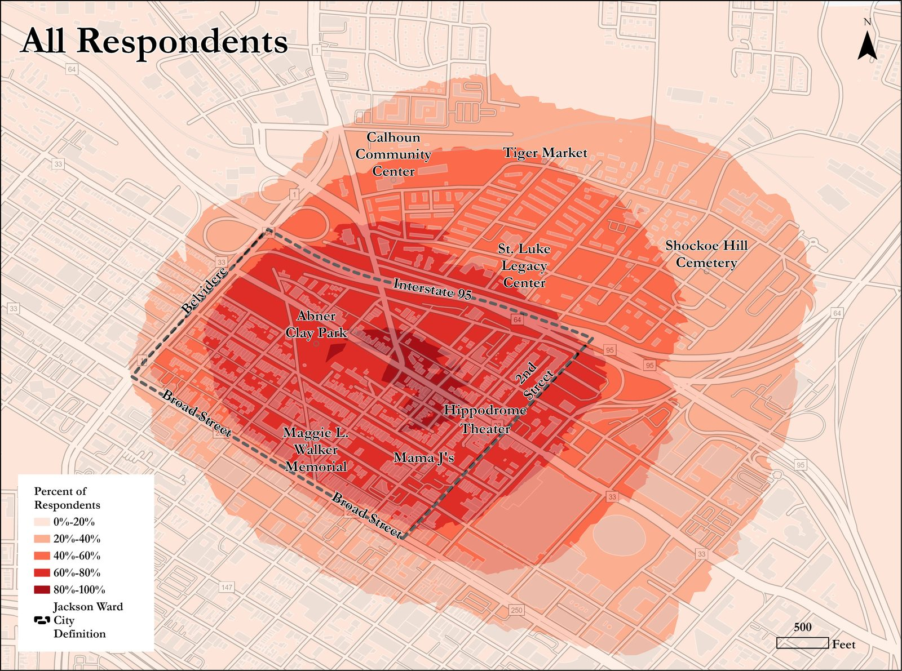
When the perceived neighborhood is measured against the city's definition, the gap is striking. Every demographic breakdown with 50% or more agreement covered a significantly larger area than the City of Richmond's Jackson Ward. The areas drawn by residents, by people with the strongest connection to the neighborhood, and by respondents aged 45 and up all nearly doubled the official area. Connection strength and age group showed the largest discrepancies, but no group drew Jackson Ward smaller than the city does.
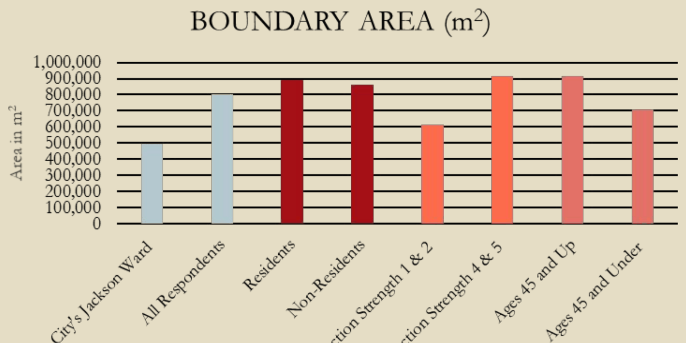
The sample split almost evenly by generation: 63 respondents were 45 or older and 65 were 30 or under, and the two groups draw the neighborhood differently. Between 80% and 100% of respondents aged 45+ highlighted 2nd Street, the historic commercial spine, while younger respondents concentrated more on the Abner Clay Park area and more often restricted the boundary to south of the interstate.
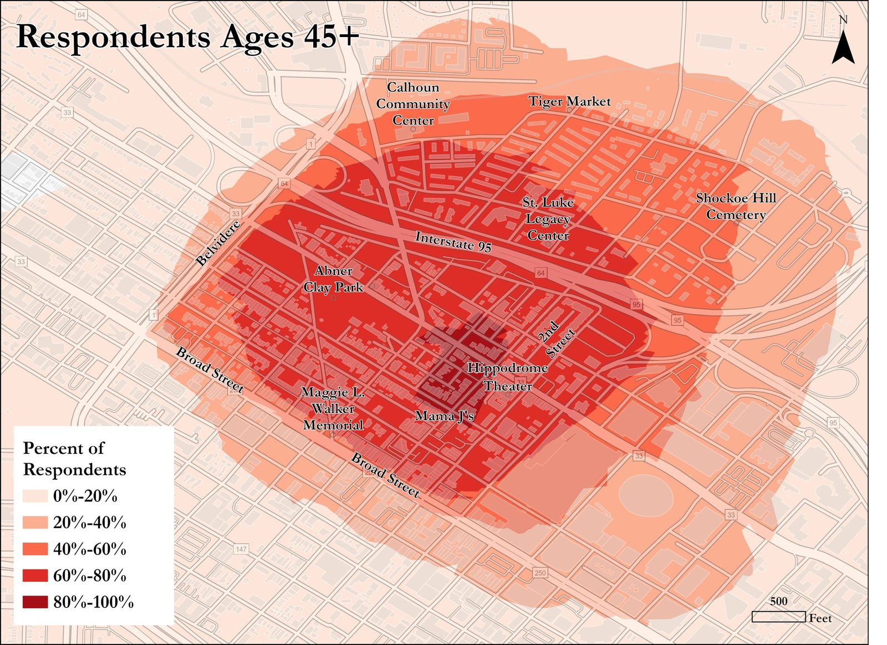
Residency divided the sample too: 60 respondents currently live in Jackson Ward and 73 do not, yet in both groups more than 60% said the neighborhood extends past the interstate to include the St. Luke's Building and 2nd Street. Among residents specifically, 80% to 100% placed the Hippodrome inside Jackson Ward.
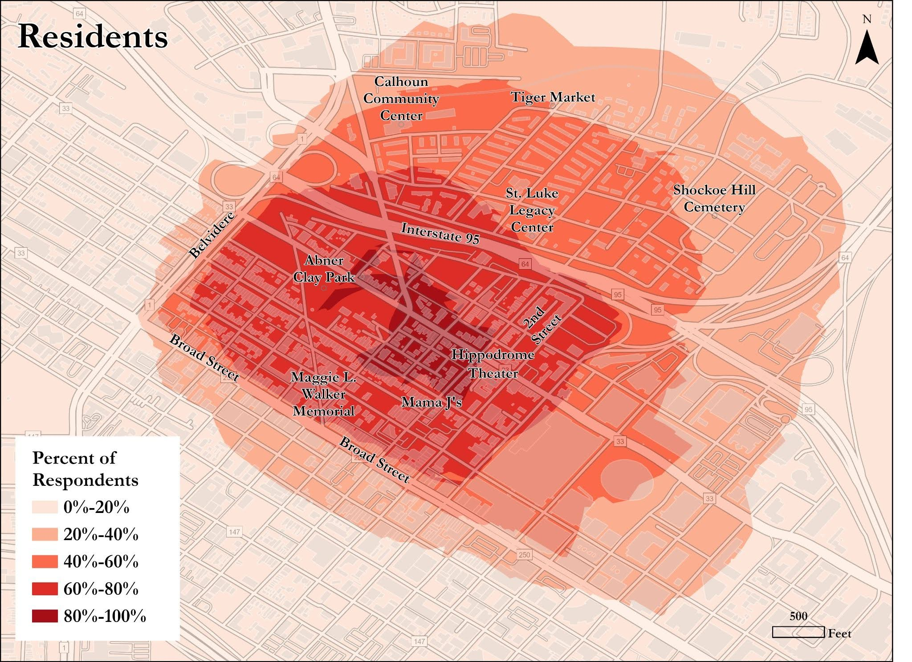
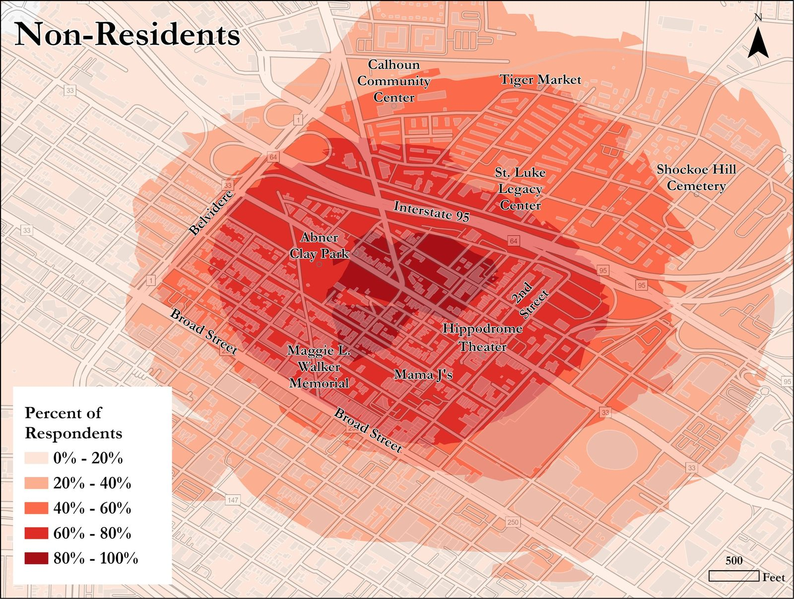
Strength of connection mattered most of all. Asked to rate their connection from 1 to 5, 78 respondents chose a 4 or 5 and 33 chose a 1 or 2, and those with the strongest ties drew the most expansive boundaries, with more than 40% of them including Shockoe Hill Cemetery as part of the neighborhood.
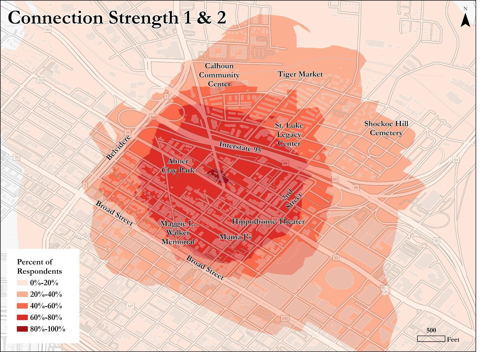
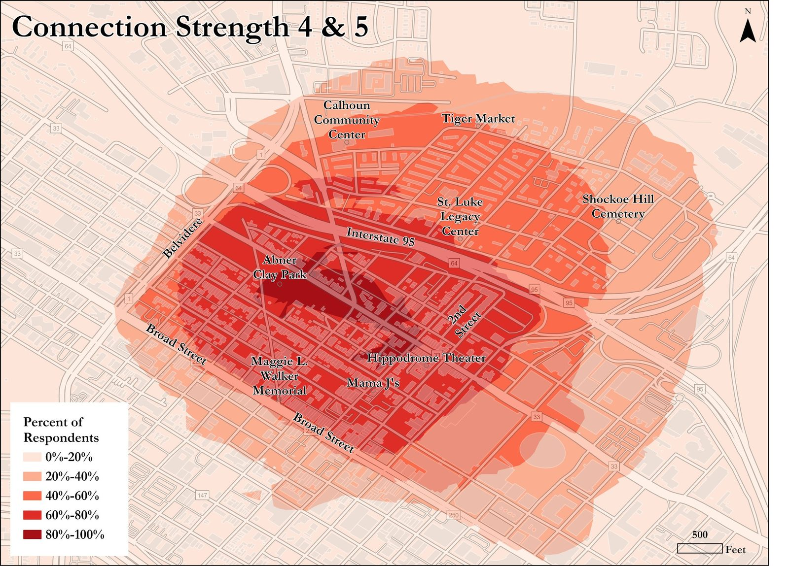
Beyond lines on a map, respondents named the establishments they associate with the neighborhood's identity. The most frequently mentioned was Mama J's, the family-owned Southern and soul food restaurant opened in 2009. Historic sites came up again and again, the Maggie Walker House, the Black History Museum, and the Hippodrome among them. Notably, several frequently named places, the Corner Store, Tiger Mart, and the Calhoun Center, sit north of the interstate, reinforcing that the lived neighborhood reaches past its official edge.
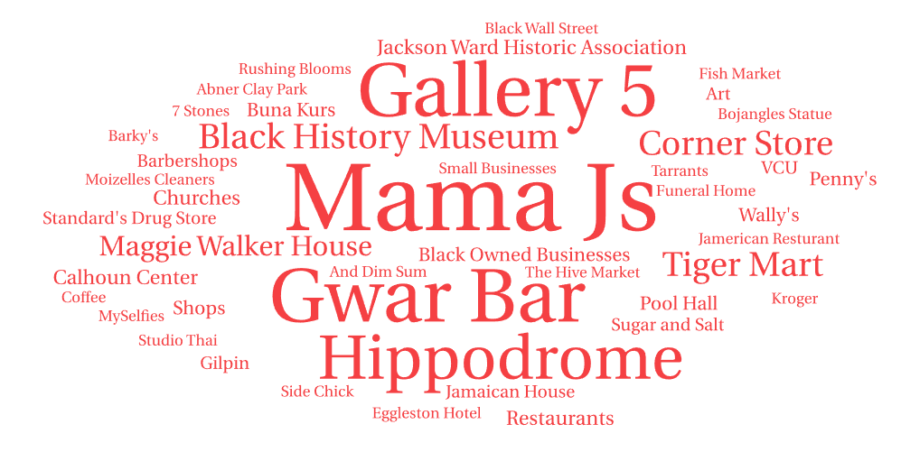
The finding that residents and the most connected community members consistently draw a larger Jackson Ward than the city recognizes is more than a mapping curiosity. It is evidence for a case the community has long made: that the official boundary excludes fundamental historic sites, particularly those north of the interstate such as the St. Luke's Legacy Building, that people still consider central to the neighborhood. A goal of the work is to bring awareness to the damage done by the division, shrinking, and marginalization of the historic neighborhood, and to support administrative boundaries that include and preserve these sites.
The team also identified ways to sharpen the survey for future years: adding a question on gender identity, broadening the community-connection question to capture ties like siblings, children, and cousins, and expanding the participatory mapping so respondents can also delineate neighboring areas, distinguishing, for instance, Gilpin Court from Jackson Ward.
The work was grounded in the neighborhood itself, from walking tours with community leaders to sharing the results back with residents.
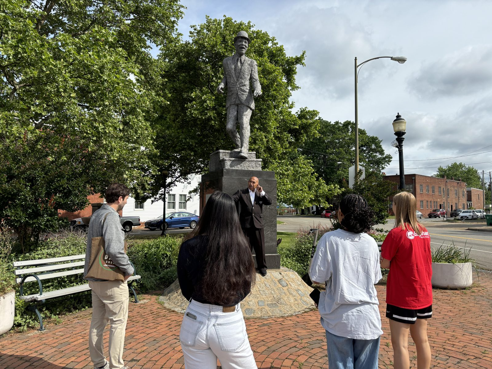
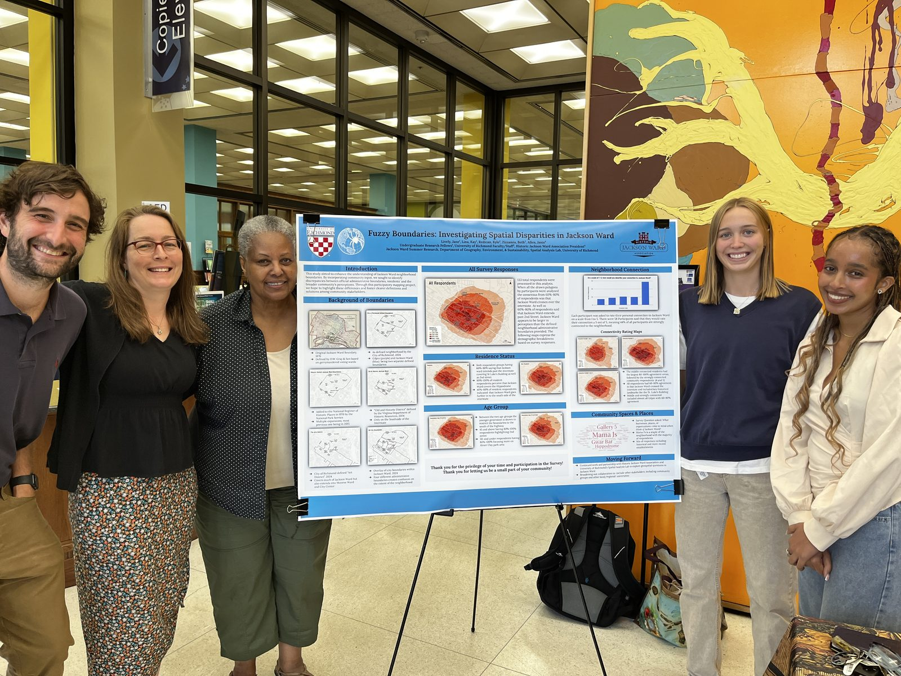
This work was presented at:
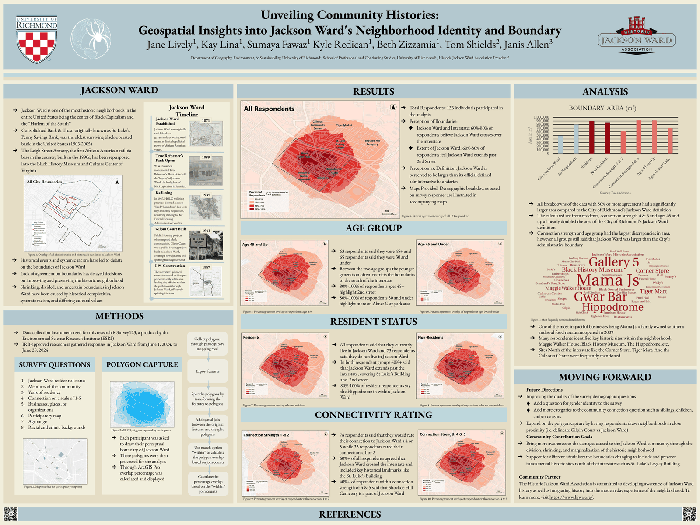
Jane Lively · Kay Lina · Sumaya Fawaz
Kyle Redican · Beth Zizzamia, University of Richmond, Department of Geography, Environment & Sustainability
Tom Shields, University of Richmond, School of Professional and Continuing Studies
Janis Allen, President of the Historic Jackson Ward Association. The association is committed to developing awareness of Jackson Ward's history and integrating it into the modern-day experience of the neighborhood. Learn more at hjwa.org.
University of Richmond, Department of Geography, Environment & Sustainability